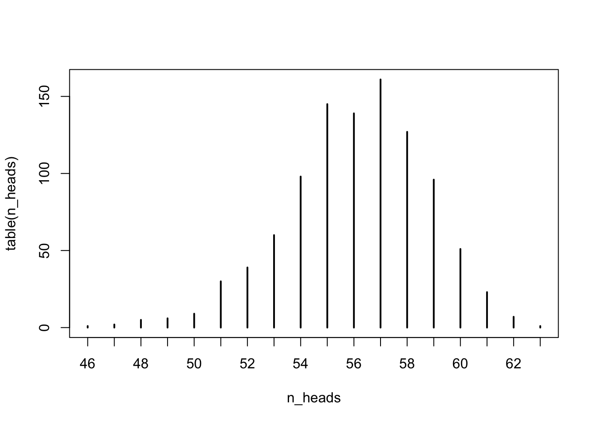

Consider flipping size distinct coins. After each round, each coin that is tails is flipped again. After n_rounds, where n_rounds is at least one, the proportion of coins that are heads is computed. Answer these questions:
In order to answer these questions, we’ll build a function to help us simulate this scenario.
flip_coins <- function(size = 64, n_rounds = 1) {
if (n_rounds < 1) stop("n_rounds must be at least 1.")
x <- sample(c("H", "T"), size = size, replace = TRUE)
if (n_rounds > 1) {
for (i in 2:n_rounds) {
x[x == "T"] <- sample(c("H", "T"), size = sum(x == "T"), replace = TRUE)
}
}
sum(x == "H")
}
flip_coins(n_rounds = 3)## [1] 57How can we estimate the average number of heads and the standard deviation associated with number of heads? We can certainly use probability theory. An alternative approach is a Monte Carlo or simulation study.
n_reps <- 1000
n_rounds <- 3library(tictoc)
n_heads <- numeric(n_reps)
tic("For Loop")
for (i in seq_along(n_heads)) {
n_heads[i] <- flip_coins(n_rounds = n_rounds)
}
toc()## For Loop: 0.067 sec elapsedtic("sapply")
n_heads <- sapply(1:n_reps, function(x) flip_coins(n_rounds = n_rounds))
toc()## sapply: 0.045 sec elapsedtic("replicate")
n_heads <- replicate(n_reps, flip_coins(n_rounds = n_rounds))
toc()## replicate: 0.043 sec elapsedlibrary(tidyverse)## ── Attaching packages ── tidyverse 1.2.1 ──## ✔ ggplot2 3.0.0 ✔ purrr 0.2.5
## ✔ tibble 1.4.2 ✔ dplyr 0.7.6
## ✔ tidyr 0.8.1 ✔ stringr 1.3.1
## ✔ readr 1.1.1 ✔ forcats 0.3.0## ── Conflicts ───── tidyverse_conflicts() ──
## ✖ dplyr::filter() masks stats::filter()
## ✖ dplyr::lag() masks stats::lag()tic("purrr")
n_heads <- rerun(n_reps, flip_coins(n_rounds = n_rounds)) %>%
unlist()
toc()## purrr: 0.032 sec elapsedNow that we have the sampling distribution of the number of heads (n_heads), we can summarise it.
plot(table(n_heads))
table(n_heads) / length(n_heads)## n_heads
## 46 47 48 49 50 51 52 53 54 55 56 57
## 0.001 0.002 0.005 0.006 0.009 0.030 0.039 0.060 0.098 0.145 0.139 0.161
## 58 59 60 61 62 63
## 0.127 0.096 0.051 0.023 0.007 0.001mean(n_heads)## [1] 56.08sd(n_heads)## [1] 2.622304Is there uncertainty in these summaries? Yes! So, how do we understand and communicate those uncertainties? Well, we could just wrap our simulation inside another simulation!